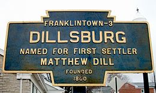

Dillsburg, My Wonderful Home
Hello World and Welcome to my Life! My name is Ryan Kreiger, I live in a beautiful rural town of Dillsburg, Pennsylvania. I am a sophomore at Northern Hight School, I also take Computer Programming at Cumberland Perry Vocational Technical School. I made this website through this class... Yes, thats right you are looking at a series of 1's and 0's I have configured for your pleasure. In my town we have lots of fun events and many more things to discover. One of the staples of my life in Dillsburg is Farmers Fair... Farmers Fair is a yearly festival around mid-october. We eat, play, and generally have a good time.
- Things to do in Dillsburg:
- Go to Farmers Fair
- Help out every August with Youth Impact
- Go to school at the great Northern High